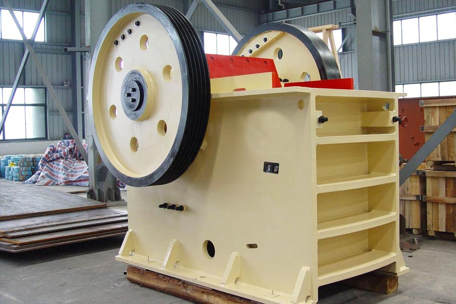

Construction waste crushing production line

Mobile construction waste crushing station for urban construction waste crushing.
Jaw Crusher Efficiency Factors
Jaw Crusher Efficiency Factors
PE600 * 900 jaw crusher is a jaw crusher models, many mining crushing production line is the most commonly used jaw crusher models. Also known as the tiger population by a movable jaw and a stationary jaw movement simulation animal jaws to crush the material. Here, it will bring a bit of detail PE600900 jaw crusher

Machine introduced.
PE600 * 900 jaw crusher broken jaw 69 machine for short, broken jaw 69 machine is suitable for granite, marble, basalt, limestone, quartz stone, river gravel, iron ore, copper ore and other materials, compressive strength of not more than 320Mpa materials. Produced materials are widely used in mining, smelting, building material, highway, railway, water conservancy and chemical industry. Jaw broken 69 Model parameters: inlet: 600 * 900 (mm); maximum feed size 500 (mm); production capacity of 70-100 (t / h); nesting population adjustment range of 65-160 (mm) ; power 55-75 (kw); weight 15.5 tons; outline feet (2536 × 1877 × 2340).
Jaw crusher work movable jaw to the fixed jaw plate periodically reciprocating motion, sometimes close, sometimes leave. When approached, the material being squeezed between the two jaws, splitting, the impact is broken; When leaving, the material has been crushed by gravity and discharged from the discharge port.
PE type jaw crusher Features
1, the jaw plate wear-resistant material made under the same conditions wear, jaw prolong life for more than 3-4 times of high abrasive materials more obvious;
2, the structure is simple, reliable, low operating costs, lubrication system safe, reliable, easy to replace parts, small maintenance workload.
3, single energy saving of 15% to 30%, saving the system more than doubled.
4, the nesting population adjustment range, adapt to a wide range, can meet different user requirements.
5, low noise, less dust, its crushing ratio, uniform particle size.
PE600 * 900 jaw crusher details and more PE series jaw broken models, please contact contact us CAG, welcome customers to visit our company.
Original title: Jaw Crusher Efficiency Factors
Leave Me A Message, Now
If you have any questions regarding equipment prices, production line configuration or other problems, you can send a message to us, we will contact you soon.